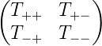
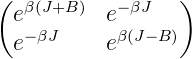

Introduction to LATEX
©2006 by Harvey Gould
December 5, 2006
TEX looks more difficult than it is. It is almost as easy as π. See how easy it is to make special symbols such as α, β, γ, δ, sin x, ℏ, λ, … We also can make subscripts Ax, Axy and superscripts, ex, ex2, and eab. We will use LATEX, which is based on TEX and has many higher-level commands (macros) for formatting, making tables, etc. More information can be found in Ref. [1].
We just made a new paragraph. Extra lines and spaces make no difference. Note that all formulas are enclosed by $ and occur in math mode.
The default font is Computer Modern. It includes italics, boldface, slanted, and monospaced fonts.
Let us see how easy it is to write equations.
|
| (1) |
It is a good idea to number equations, but we can have a equation without a number by writing
|
|
and
|
|
We can give an equation a label so that we can refer to it later.
|
| (2) |
Equation expresses the energy of a configuration of spins in the Ising model.1
We can define our own macros to save typing. For example, suppose that we introduce the macros:
Then we can write the average value of x as
The result is
|
| (3) |
Examples of more complicated equations:
|
| (4) |
We can do some fine tuning by adding small amounts of horizontal spacing:
as is done in Eq. (4).
We also can align several equations:
| a | = b | (5) |
| c | = d, | (6) |
or number them as subequations:
We can also have different cases:
|
| (8) |
write matrices
| T | = , | ||
| = . | (9) |
and
|
| (10) |
Tables are a little more difficult. TeX automatically calculates the width of the columns.
| lattice | d | q | Tmf∕Tc |
| square | 2 | 4 | 1.763 |
| triangular | 2 | 6 | 1.648 |
| diamond | 3 | 4 | 1.479 |
| simple cubic | 3 | 6 | 1.330 |
| bcc | 3 | 8 | 1.260 |
| fcc | 3 | 12 | 1.225 |
Some example of formatted lists include the following:
We can make figures bigger or smaller by scaling them. Figure ?? has been scaled by 60%.
It is desirable to print program code exactly as it is typed in a monospaced font. Use \begin{verbatim}and \end{verbatim}as in the following example:
The command \verbatiminput{programs/Square.java}\allows you to list the file Square.java in the directory programs.
These commands may be used only in math mode. Only the most common letters are included here.
α,β,γ, Γ,δ, Δ,ϵ,ζ,η,θ, Θ,κ,λ, Λ,μ,ν,ξ, Ξ,π, Π,ρ,σ,τ,ϕ, Φ,χ,ψ, Ψ,ω, Ω
The derivative is defined as
|
| (11) |
|
| (12) |
|
| (13) |
Order of magnitude:
|
| (14) |
|
| (15) |
Approximate equality:
|
| (16) |
LATEX is simple if we keep everything in proportion:
|
| (17) |
Finally we can skip some space by using commands such as
The space can be negative.
We can change colors for emphasis, but who is going pay for the ink?
As soon as many students start becoming comfortable using LATEX, they want to use some of its advanced features. So we now show how to place two figures side by side.
We first have to include the necessary package, \usepackage{subfigure}, which has to go in the preamble (before \begin{document}). It sometimes can be difficult to place a figure in the desired place.
Your LaTeX document can be easily modified to make a poster or a screen presentation similar to (and better than) PowerPoint. Conversion to HTML is straightforward. Comments on this tutorial are appreciated.
[1] Helmut Kopka and Patrick W. Daly, A Guide to LATEX: Document Preparation for Beginners and Advanced Users, fourth edition, Addison-Wesley (2004).
Updated 5 December 2006.